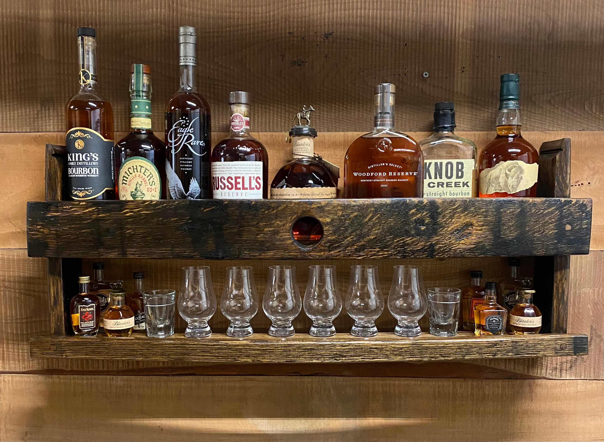
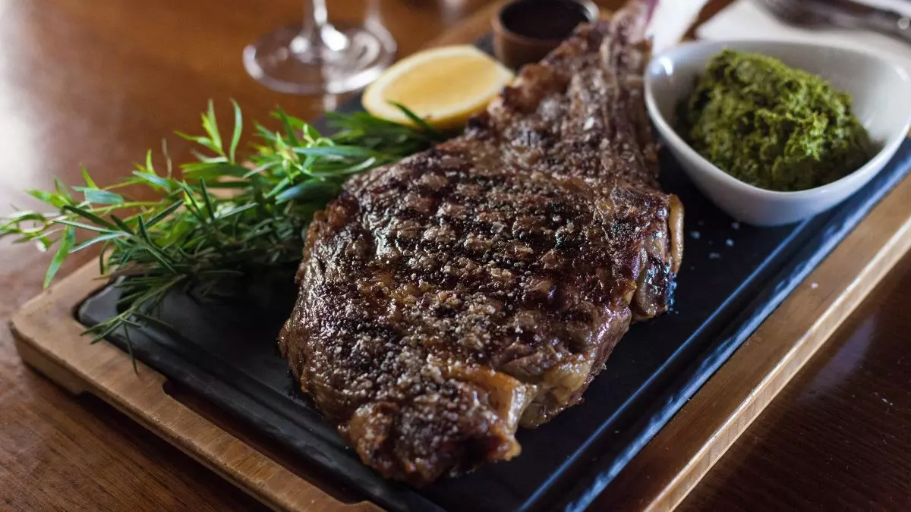
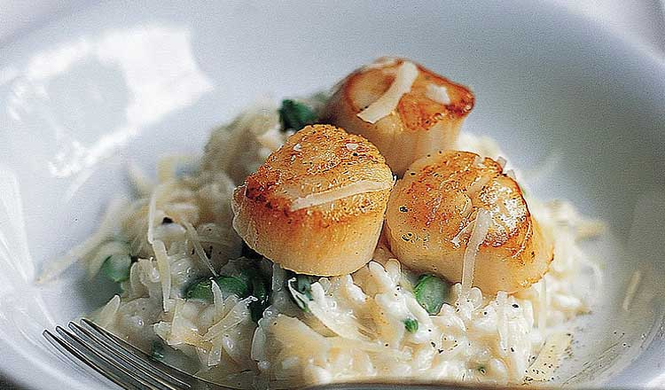

The house
The houseOld bones.
New rituals.
The original Oaklawn home dates to 1954. Today its rooms hold candlelit dinners, date nights, celebrations and the kind of bar conversation that lasts one more round.
See the rooms
Prime steaks, seafood and cocktails served with warm Southern hospitality. Come for dinner. Stay for the evening.
Reserve your tableWe made a dining room out of a home, then kept the best part: the feeling of being welcomed in.
Oaklawn brings steakhouse confidence, Southern warmth and a serious bar together under one roof, minutes from Paris Landing State Park and Land Between the Lakes. The menu moves from oysters and chops to seabass and bourbon, with service designed around the whole night rather than the next turn of the table.
The houseThe original Oaklawn home dates to 1954. Today its rooms hold candlelit dinners, date nights, celebrations and the kind of bar conversation that lasts one more round.
See the rooms
After supper
Sweet mustard Carolina sauce, herb tallow and sweet potato casserole.

Brown sherry garlic butter, parmesan risotto, asparagus and house vegetables.

Fresh espresso, vodka and cream. A proper ending, if the bourbon does not get there first.
1008 E Wood Street
Paris, TN 38242
731-407-4262
Reservations recommended